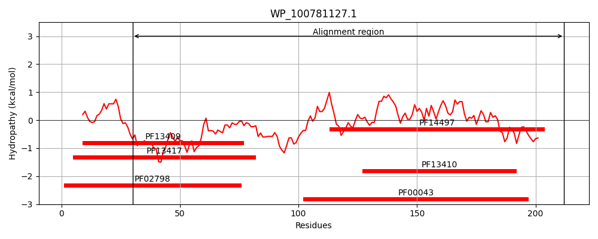
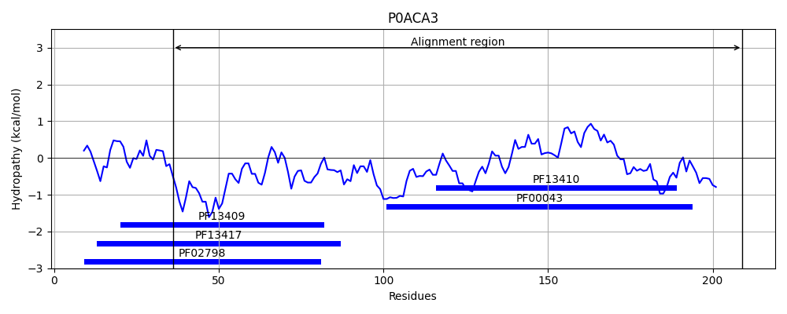
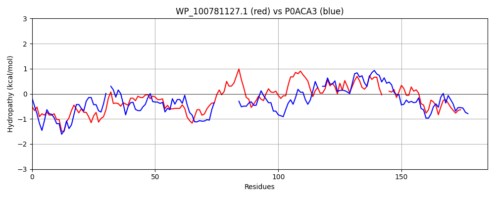

Hit Accession: P0ACA3
Hit TCID: 1.A.12.3.1
Hit Description: gnl|BL_ORD_ID|8736 gnl|TC-DB|P0ACA3|1.A.12.3.1 Stringent starvation protein A OS=Escherichia coli (strain K12) GN=sspA PE=1 SV=2
Mach Len: 185
e:0.000000
Query TMS Count : 0
Hit TMS Count: 0
TMS-Overlap Score: 0.000000
Predicted Substrates:CHEBI:3731;chloride, CHEBI:24834;inorganic anion
BLAST Alignment:
Score: 113 , Bit scores: 48 bits, E-value: 4.9e-07, Alignment length: 185, Percentage identity: 24
Query: 30 FDVGHRYGGTDSEAFYQLNPNRTVPVLQDGDNPPLWETGAILRYLASRYADDAFWPGDLLARTEVDRWAEWSKQNIALGFTAPVFWRVVRTPAAERDPQAIAAAVTALEKKLAIAEARLAGSRYLVGDTFTLADIQFGHVLYR--YFAIDITRHSLPHLAAYYARLTERPAFRQHVMVSYDELKV 212
F++ H + LNPN++VP L D + LWE+ I+ YL R+ P +AR E + +++ ++ ++ T +A AA E+ LAIA Y + D F+L D +L+R I+ + L Y R+ ER +F + + E+++
Sbjct: 36 FEIEHVEKDNPPQDLIDLNPNQSVPTLVDRE-LTLWESRIIMEYLDERFPHPPLMPVYPVARGESRLYMHRIEKD---------WYTLMNTIINGSASEADAARKQLREELLAIAPV-FGQKPYFLSDEFSLVDCYLAPLLWRLPQLGIEFSGPGAKELKGYMTRVFERDSFLASLTEAEREMRL 209 | Protein Hydropathy Plots: |
|---|
|  |  |
Pairwise Alignment-Hydropathy Plot:
|
|---|
|  |